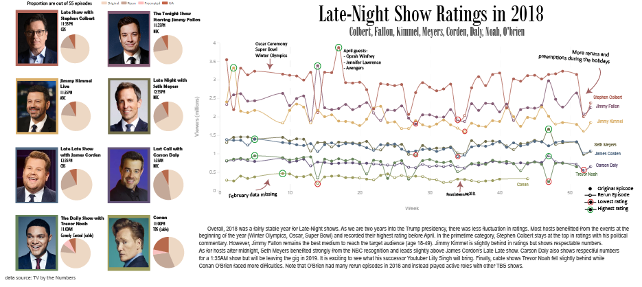

Late Night Ratings Data Visualization with Flourish

Data Collection
Surprisingly, there were no easy TV ratings available for TV series. After searching on the main resources such as Google Dataset and Reddit, I settled on generating the dataset myself. TV by the Numbers is a entertainment website that releases a ratings post about late night shows every week. I hence went to each of the 50 articles published in 2018 and saved all the numbers in an EXCEL spreadsheet. Notice that 5 weeks had no articles and I had to leave those numbers as N/A.
Data Exploration
Next, I searched up interesting information about each host and saved the information on either the excel spreadsheet or on this project repo's README (link). I aggregated a lot of useful information, but were only able to illustrate a fraction of it to not overload the final visualization.
Data Visualization Templates
I first sketched out how I wanted the visualization to look like. Pretty quickly, I settled on using Time Series and Pie Chart. As I was going through my Twitter, I noticed the new "Bar Chart Race" feature and decided to add it as a bonus on the repo. The gif however was not added to the final visualization since I wanted to make this project static. These templates were made using Flourish. Honestly, this online software was so easy to use. I was really pleased and recommend others to give it a go too.
Time Series
Pie Chart
Bar Chart Race
Data Visualization Final Result
Finally, I combined all the information together using Illustrator. There, I added all the textual information I wanted, played with the colors and added a new legend for the time series. I wanted to highlight the highest rated and lowest rated videos and make it more evident which curve represents which host.
Overall, I am very pleased with the final result. Flourish+Illustrator is a really good combination for data visualization.